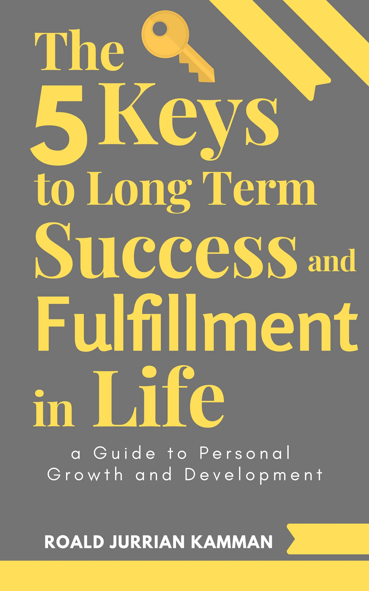

Personal development
My story 6 years ago:
- I was depressed
- I had Lymes disease
- I was wrongly diagnosed with autism from an early age
- I was told I may never run again by a doctor after breaking my foot
- I weighed 150 kilo's with 50% body fat
my Achievements years later
- I lost over 65 kilos of body fat and gained massive amounts of muscle
- I gained a healthy relationship with food
- I quit all my bad habits including my gaming addiction
- I learned social skills after being seperated from society
- I successfully went through military training after being told I may never run again
- I discovered psychology and sociology
- I delved into the realms of personal development
My Book
After my journey in personal development, I boiled down my strategy and approach to life into a formula that I wanted to share with the world.
So after a long time thinking and reiterating my content I finally managed to write and publish my book The 5 Keys to Long Term Success and Fulfillment in life. A Guide to Personal Growth and Development.
You can find and purchase my book Here
